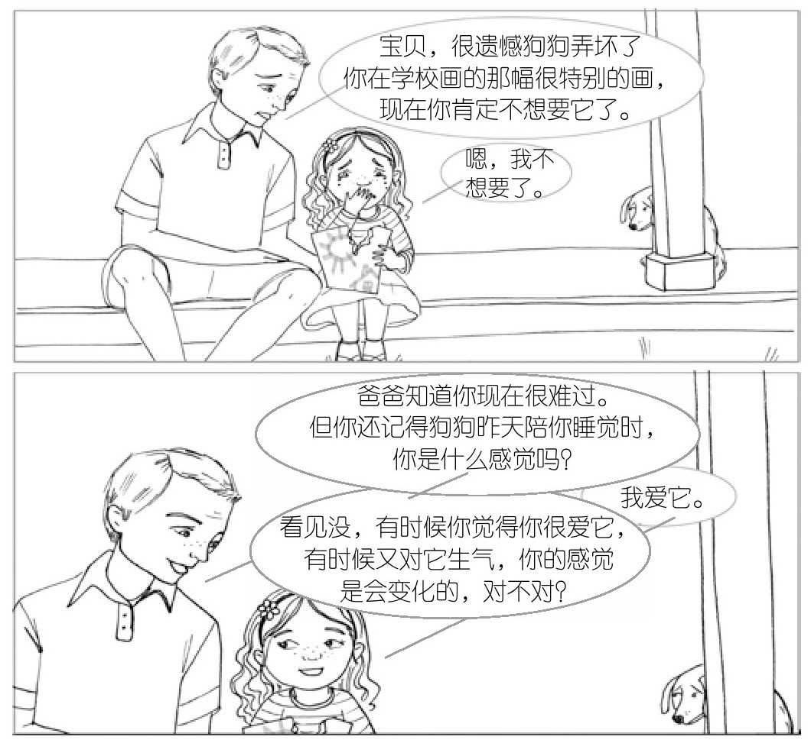
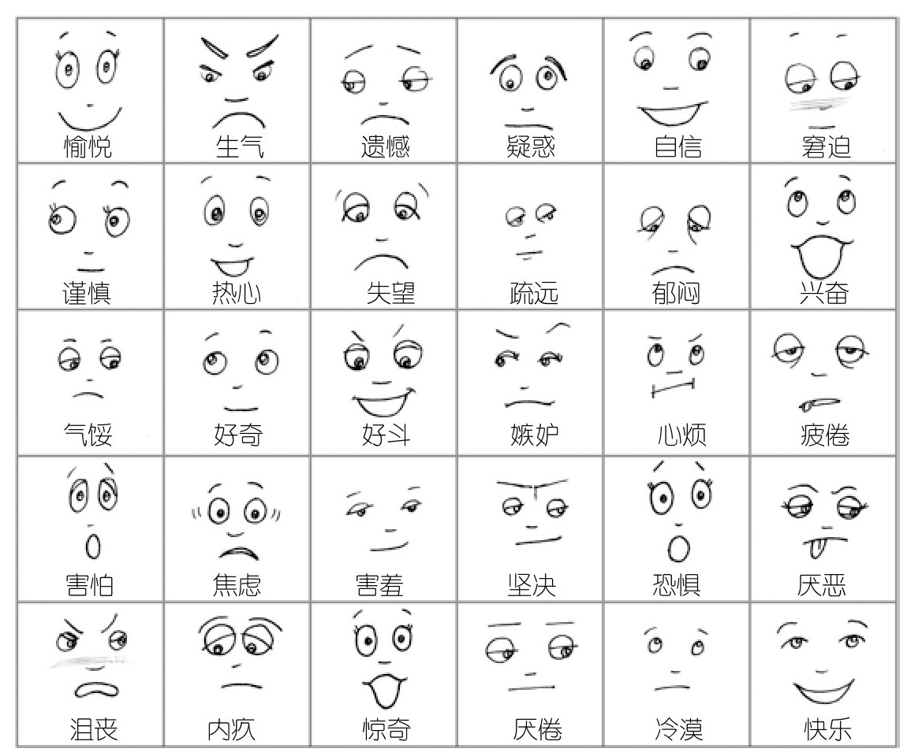
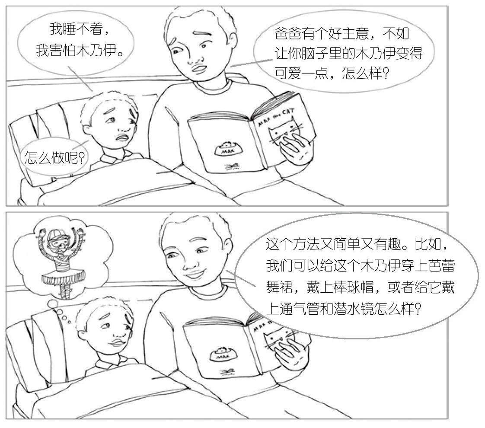
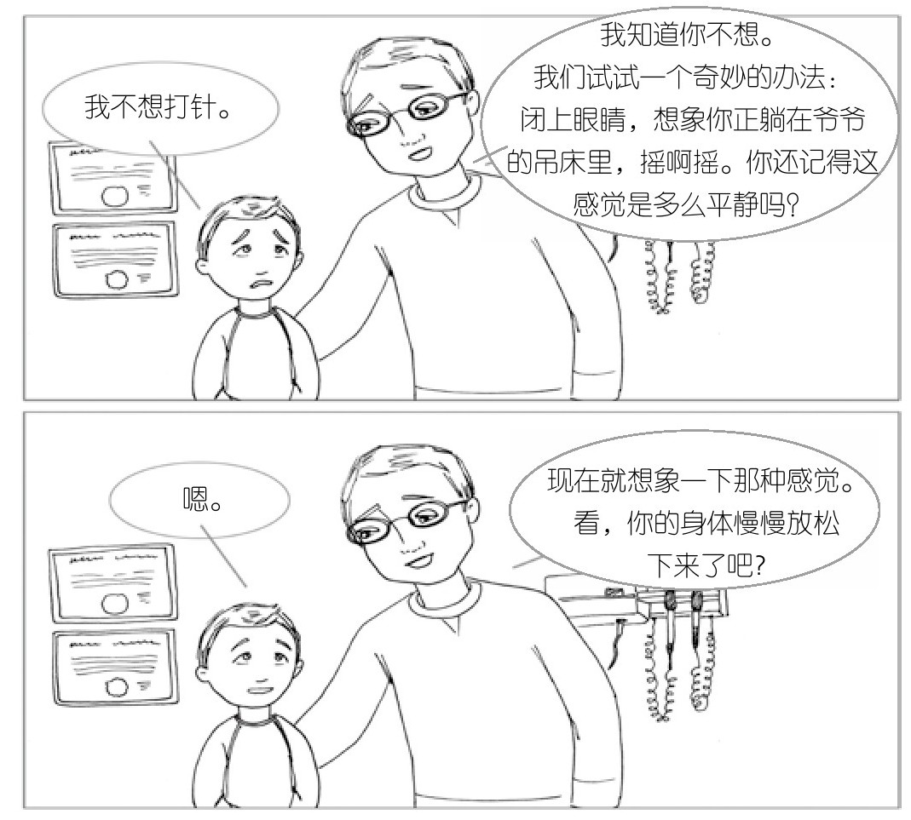

05b · 浮云、调色板和呼吸
上一篇给了你一张地图——觉知之轮。中心是本源，外围是你体验到的一切。愤怒来了你不是愤怒，你是那个注意到愤怒的人。
地图有了。现在是怎么走路。
西格尔在"全脑教养指南"里给了三个具体方法。一个教孩子理解感受的本质，一个教孩子识别情绪的丰富性，一个教孩子自己回到本源。
第8法：浮云原理——"感受是会走的"
西格尔说，我们需要让孩子理解一件关于感受的、最基本的事：感受是暂时的。它们是状态，不是特质。
一种情绪从产生到消逝，平均时间不超过 90 秒。
这对一个孩子来说非常难理解。当他受伤或受惊时，他很难相信这种痛苦不是永远的。在那个瞬间——暴怒、崩溃、嚎啕大哭——他不是"有愤怒"，他是愤怒。整个轮子被一片云遮住了，他看不见天空。
浮云原理就是在孩子平静的时候（不是在暴风雨中间），反复告诉他这件事：情绪就像天上的云。它们会来，它们也会走。 悲伤会来，也会走。愤怒会来，也会走。害怕会来，也会走。
你越是帮他理解这个事实，他就越不容易执着于外围上的某一个点。他就能从"我很伤心"——一种永恒的身份——移到"我现在感到伤心"——一种暂时的状态。

对你两岁的孩子来说，他现在还理解不了"感受是暂时的"。他开心的时候就是全世界最开心的人，不开心的时候就是全世界最不开心的人。这就是两岁的觉知之轮——一次只能装下一个外围面向。
但你能做一件事：你自己相信浮云原理。 当他崩溃的时候，你不会觉得"完了，这个孩子脾气太坏了"。你知道这只是一朵云。它 90 秒之后就会开始散。你的平静——你对浮云的确信——是他还不会的内隐学习。你接纳他的感受，同时不给它永恒的身份：不是"你这孩子怎么老这样"，是"你现在感到很生气，这种感觉会过去的"。
第9法：情绪调色板——"你的感受比你以为的更丰富"
觉知之轮的外围上有各种东西：感觉、意象、情绪、念头。孩子通常只能用最粗的画笔——"还行"、"很糟"、"开心"、"不开心"。非黑即白。
第9法是帮孩子看清自己内心到底有多少种颜色。
西格尔把它叫"审查"——不是审讯的意思，是记者做调查的意思。四个维度：
审查感觉。 身体的感觉是情绪最早的信号。胃在搅动 → 焦虑。拳头想打人 → 愤怒或沮丧。肩膀沉重 → 悲伤。孩子学会了识别这些信号，就能在情绪吞没他之前拉住自己。
审查意象。 脑子里闪过的画面。一个在课间被孤立的孩子，脑子里反复出现自己一个人荡秋千的画面。一个怕黑的小孩，恐惧来自噩梦残留在记忆里的影像。如果孩子能看到"我脑子里在放这部片子"，他就能用第七感来控制它——而不是被它控制。
审查情绪。 从"还行"、"很糟"变成"失望"、"嫉妒"、"焦虑"、"兴奋"。孩子通常只能用黑白两色画自己的情绪，因为他还没学会看见情绪的彩虹。你每帮他一次——"我知道不让你吃糖你很失望"——就是在给他的调色板加一种颜色。

审查念头。 这是左脑的活儿。脑子里对自己说的话。一个 11 岁的女孩对着镜子说："露营晒成这样太蠢了，太蠢了！"但如果她学过审查念头，她会后退一步，纠正自己："得了吧，跟愚蠢没关系。有时候忘记防晒很正常。今天几乎所有孩子都晒伤了。"
不是每个念头都必须信。
你已经在做第9法了。你帮孩子把"说不清楚的那种不舒服"变成"你感到很生气，对吗"——这是审查情绪。你跟孩子复盘扯头发那件事，帮他还原事情经过——那是审查意象和念头。他两岁了，还不会自己说，但你每一次帮他命名，他的大脑里就多一种颜色。
一个能随时玩的"审查游戏"
西格尔给了一个开车时的游戏——你和孩子轮流说：
- "我的身体告诉我：我饿了。你的身体告诉你什么？"
- "我脑子里在放昨天你戴那顶搞笑帽子的画面。你看见了什么画面？"
- "我一想到明天要去爷爷奶奶家就兴奋。你感觉到什么？"
- "我刚想到我们该买牛奶了。你脑子里飘过什么念头？"
感觉 → 意象 → 感受 → 念头。四轮转下来，孩子学会了一件他这辈子都会用的东西：看着自己的脑子，而不是被自己的脑子推着走。
西格尔在这四个维度背后藏了一条更深的线索：它们不是孤立的。身体感觉塑造了情绪，情绪塑造了念头和意象——反过来也一样。如果一个敌对的念头冒出来，愤怒的感受就跟着来，接着肌肉就绷紧了。外围上的这些点是互相喂的。审查的意义不只是"看见每一个"，更是"看见它们之间的回路"——然后你才能打断它。

第10法：第七感练习——回到本源的路
第8法让孩子知道感受会走。第9法让孩子看清自己内心有什么。第10法是教会孩子怎么靠自己回到觉知之轮的本源。
9 岁的妮可在音乐会当天早上紧张得不行。她要在朋友和朋友的父母面前拉小提琴。可以理解的紧张——但她需要工具。她妈妈安德莉亚让她平躺在沙发上，做了一次第七感练习。
"闭上眼睛。先注意你听到的声音——汽车开过，狗在街上叫，哥哥在浴室开水龙头。你刚才没注意到这些声音，但现在你注意到了。因为你在主动听。
"现在注意你的呼吸。空气从鼻子进出。胸腔的起伏。肚子的起伏。
"接下来我会安静一小会儿。你继续关注呼吸。会有别的念头飘进来——你可能会想到音乐会。没关系。当你注意到思绪开始游走了，就再回到呼吸上来。自然地跟着呼吸的节奏。"
大约一分钟后，妮可睁开眼睛。她妈妈告诉她：这个东西——把注意力放到呼吸上——你随时可以用。音乐会开始前几分钟，心跳开始加速、手开始冒汗的时候，闭上眼睛也好，不闭也好，回到呼吸上。
妮可那天演奏得很精彩。

注意安德莉亚没有说"别紧张"。她给了妮可一个能做的事——回到本源。从那个位置，焦虑只是外围上的一个点。它还在，但它不再是全部。
对更小的孩子，西格尔给了一个变体：让孩子平躺，肚子上放一个玩具小船。让他看着小船随着自己的呼吸一起一伏。一个四五岁的孩子就能做。他不需要懂"觉知之轮"——他只需要知道：当我看着我的呼吸，我就不那么容易被我脑子里的暴风雨卷走。
三个方法，一条回归的路
浮云原理 → "感受是一朵云，它会飘走。"
情绪调色板 → "你内心有一整套颜色，不只是黑白。"
第七感练习 → "吸气，呼气。你回到了中心。"
孩子不需要完美掌握。他只需要开始知道：我不是我的情绪。我是那个能看见情绪的人。
这一章的核心，三句话
-
你有一个轮子。 中心是本源——那个觉察的你。外围是你体验到的一切。愤怒、焦虑、快乐、记忆、身体感觉——它们在外围上。你不是它们。你是那个看着它们的人。
-
感到不是我是。 孩子把暂时的感受当成永久的身份——"我很笨""我没人喜欢"——因为他还没发现轮子中心。帮他从"我感到沮丧"回到"我是那个注意到沮丧的我"，一个字的距离，两种完全不同的人生体验。
-
注意力就是雕刻刀。 你关注哪里，大脑就在哪里建立连接。每一次你把注意力从恐惧移到呼吸上——哪怕只用 60 秒——你的大脑结构就在发生物理变化。不是意志力。是神经可塑性。
下一篇是全书最后一章——西格尔把第七感的镜头从"我自己"转向"我们"。大脑天生为关系而生。你在孩子的镜子里看见他自己，孩子在你的镜子里看见他值不值得被爱。
学习反馈
在飞书中回复本条消息，填写你的答复。